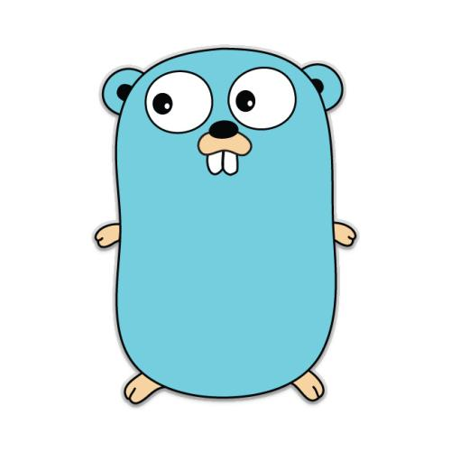

- 作者 :Xcbeyond
- 发表于 :2021-02-21
- 分类 : Go语言从入门到精通
- 阅读次数 :
1、Go 介绍
Go is an open source programming language that makes it easy to build simple, reliable, and efficient software.
“ Go 是一种开源的程序设计语言，它意在使得人们能够方便地构建简单、可靠、高效的软件。”（来自 Go 官网 golang.org的定义）
Go 语言，又称为 Golang，在 2007 年 9 月形成构思，并于 2009 年 11 月发布，其发明人是 Google 的Robert Griesemer, Rob Pike 和 Ken Thompson。该语言其及配套工具集使得编译和执行既富有表达力又高效，而且使得程序员能够轻松写出可靠、健壮的程序。
Go 的吉祥物是金花鼠（gordon），并将其作为 logo，如下图所示：

Go 是从 2007 年末由 Robert Griesemer, Rob Pike, Ken Thompson 主持开发，后来还加入了 Ian Lance Taylor, Russ Cox 等人，并最终于 2009 年 11 月开源，在 2012 年早些时候发布了 Go 1 稳定版本。现在 Go 的开发已经是完全开放的，并且拥有一个活跃的社区。
1.1 Go 的起源
编程语言的演化跟生物物种的演化类似，成功的语言会繁衍后代，这些后代语言会从它们的祖先那里汲取各种优点。有时候，语言间的“混血”会产生异常强大的力量；在一些罕见情况下，某个重大的语言特性也可能凭空出现而无先例。通过观察语言间的影响，我们可以学到不少知识，比如语言为什么会变成这个样子，以及它适合用于哪些环境等等。
下图展示了有哪些早期的编程语言对 Go 语言的设计产生了重要影响。

Go 有时会称为“类 C 语言”，或者是“ 21 世纪的 C 语言”。从 C 中，Go 继承了相似的表达式语法、控制流结构、基本数据类型、按值调用的形参传递和指针，但比这些更重要的是，继承了C所强调的要点：程序要编译成高效的机器码，并自然地与所处的操作系统提供的抽象机制相配合。
但是在 Go 语言的家族树中还有其它的祖先。其中一个有影响力的分支来自 Niklaus Wirth 所设计的 Pascal 语言。然后Modula-2语言激发了包的概念。然后 Oberon 语言摒弃了模块接口文件和模块实现文件之间的区别。第二代的 Oberon-2 语言直接影响了包的导入和声明的语法，还有 Oberon 语言的面向对象特性所提供的方法的声明语法等。
Go 语言的另一支祖先，带来了 Go 语言区别其他语言的重要特性，灵感来自于贝尔实验室的Tony Hoare于 1978 年发表的鲜为外界所知的关于并发研究的基础文献 顺序通信进程 （ communicating sequential processes ，缩写为CSP。在CSP中，程序是一组中间没有共享状态的平行运行的处理过程，它们之间使用管道进行通信和控制同步。不过Tony Hoare的CSP只是一个用于描述并发性基本概念的描述语言，并不是一个可以编写可执行程序的通用编程语言。
接下来，Rob Pike 和其他人开始不断尝试将 CSP 引入实际的编程语言中。他们第一次尝试引入 CSP 特性的编程语言叫 Squeak （老鼠间交流的语言），是一个提供鼠标和键盘事件处理的编程语言，它的管道是静态创建的。然后是改进版的 Newsqueak 语言，提供了类似 C 语言语句和表达式的语法和类似 Pascal 语言的推导语法。Newsqueak 是一个带垃圾回收的纯函数式语言，它再次针对键盘、鼠标和窗口事件管理。但是在Newsqueak语言中管道是动态创建的，属于第一类值, 可以保存到变量中。
在 Plan9 操作系统中，这些优秀的想法被吸收到了一个叫 Alef 的编程语言中。Alef 试图将 Newsqueak 语言改造为系统编程语言，但是因为缺少垃圾回收机制而导致并发编程很痛苦。（译注：在 Alef 之后还有一个叫 Limbo 的编程语言，Go 语言从其中借鉴了很多特性。 具体请参考 Pike 的讲稿：http://talks.golang.org/2012/concurrency.slide#9 ）
Go 语言的其他的一些特性零散地来自于其他一些编程语言；比如 iota 语法是从 APL 语言借鉴，词法作用域与嵌套函数来自于 Scheme 语言（和其他很多语言）。当然，我们也可以从 Go 中发现很多创新的设计。比如 Go 语言的切片为动态数组提供了有效的随机存取的性能，这可能会让人联想到链表的底层的共享机制。还有 Go 语言新发明的 defer 语句。
1.2 Go 的特点
- 简洁、快速、安全
- 并行、有趣、开源
- 内存管理、数组安全、编译迅速
1.3 Go 的用途
其它语言能够实现的系统，Go 语言都能实现。
目前，Go 主要应用在下面这些系统：
-
服务器编程，以前你如果使用
C或者C++做的那些事情，用Go来做很合适，例如处理日志、数据打包、虚拟机处理、文件系统等。 -
分布式系统、数据库代理器等，比如
Etcd。 -
网络编程，这一块目前应用最广，包括
Web应用、API应用、下载应用，而且Go内置的net/http包基本上把我们平常用到的网络功能都实现了。 -
数据库，前一段时间
Google开发的Groupcache，Couchbase的部分组件，Tidb，Cockroachdb，Influxdb等。 -
云平台，目前国外很多云平台在采用
Go开发，CloudFoundy的部分组建，前VMare的技术总监自己出来搞的Apcera云平台。 -
云原生技术，比如
docker、Kubernetes等。
1.4 Go 的美貌
说了这么多，Go 程序到底长啥样？我们先睹为快，一看美貌！
来来来，以hello.go为例看看它长啥样。（Go 语言源文件的扩展是 .go）
package main
import "fmt"
func main() {
fmt.Println("Hello, World!")
}
2、为什么我们要学习 Go？
就我而言，目前主要从事微服务方面的产品研发，之前一直使用 Java 语言作为核心编程语言，但随着市场的变化，Java 有时变得力不从心（一些轻量级的功能模块实现时，Java 却显得有些笨重）。此外，为迎接云原生技术的到来，学习 Go 成为了必然。
对于你而言，为什么要学习 Go 呢？下面我参考知乎和网上大神的答案，谈谈 Go 语言的优势。
-
Go 语言特色
- 简洁、快速、安全
- 并行、有趣、开源
- 内存管理、数组安全、编译迅速
-
Go 语言用途
Go语言被设计成一门应用于搭载Web服务器，存储集群或类似用途的巨型中央服务器的系统编程语言。对于高性能分布式系统领域而言，
Go语言无疑比大多数其它语言有着更高的开发效率。它提供了海量并行的支持，这对于游戏服务端的开发而言是再好不过了。 -
C/C++的问题
开发效率低，对开发者要求高；libc 只向后兼容，运维难度偏大。
- Lua/Python的问题
动态语言，缺少编译过程，低级错误频出；缺少有效的性能分析及调试工具。